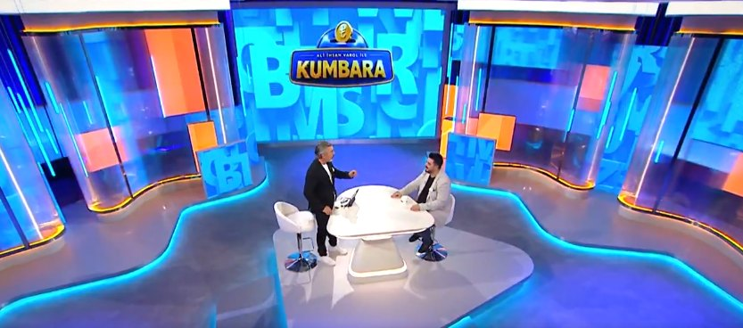
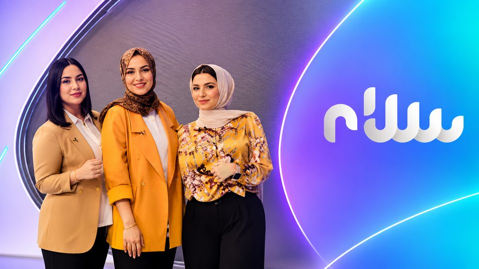
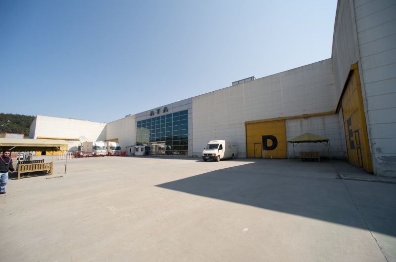
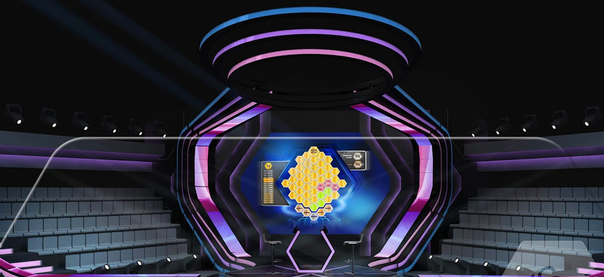
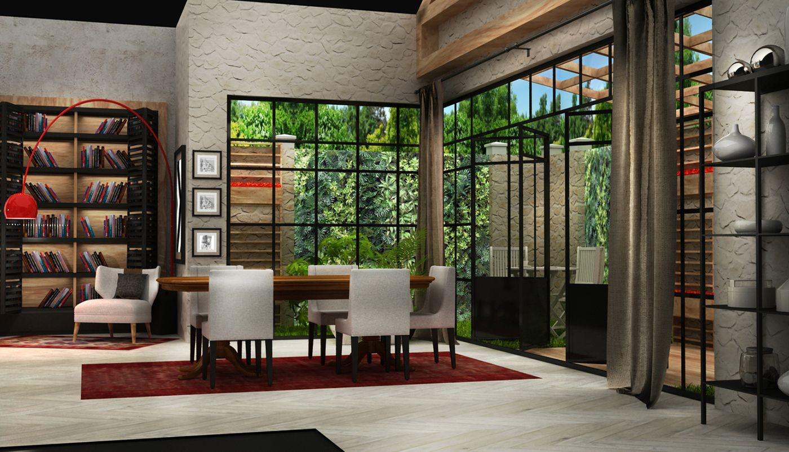

Lingo
TRT 1 · Kağıthane Stüdyoları

Stüdyo, kamera, reji, ses, ışık, LED ve dekor: bir televizyon programının ihtiyaç duyduğu her şey, ilk çizimden canlı yayına kadar tek ekipte. Kağıthane'den Doha'ya, Trablus'tan Duhok'a, Moskova'dan Fransa'ya.
Bu sezon
Stüdyolarımızda çekilen ve ekibimizin yayına hazırladığı, ekranda devam eden programlar.
TRT 1 · Kağıthane Stüdyoları

NOW · Kağıthane Stüdyoları

Libya
İki iş kolu
Bir programın dekorunu tasarlayan ekip, o dekoru kuran, ışığını yakan ve yayına çıkaran ekiple aynı. Arada başka firma yok, sorumluluk tek yerde.

TVS Prodüksiyon / TVS Stüdyoları
Kağıthane stüdyomuzda ya da sizin mekânınızda; kamera, reji ve ışıkla eksiksiz prodüksiyon.

TVS WorkHouse
Haber, spor, yarışma ve eğlence programları için konsept, 3D tasarım, imalat ve uygulama. Müze ve mekân projeleri.
Stüdyo, reji ve medya yapılarının mekân ve akustik kurgusu.
Kamera, ses, ışık, LED ve yayın sistemlerinin altyapı kurgusu.
Farklı üreticilerin ekipmanlarını tek, çalışan bir yayın sistemine bağlama.
Montaj, test ve devreye alma; yayın başladıktan sonra teknik destek.
Bizim için bir proje teslim edildiği gün bitmez: başarı ölçümüz, uzun vadede sorunsuz çalışması ve operasyonel verimlilik sağlamasıdır. Biz yalnızca bir yüklenici değil, güvenilir ve stratejik bir çözüm ortağıyız.
Stüdyolar, havalimanları ve etkinlikler için LED ekran tedariki; kurulumdan sonra teknik destek de bizden.
Köklerimiz
Film setlerinden yayın stüdyolarına, otuz yılı aşkın bir birikim.
Film prodüksiyon hizmetleriyle sektöre giriş.
ATA Film Stüdyoları: İstanbul'da 6.500 m² alanda, ses ve akustik yalıtımlı 5 plato. Projelendirdik ve inşa ettik.
TEM Stüdyoları, ATA Film Stüdyoları bünyesine katıldı.
TVS Prodüksiyon kuruldu.
Moskova: beIN Sports Dünya Kupası stüdyoları.
Katar: Dünya Kupası yayın ve stadyum dekorları.
Kağıthane stüdyolarında Lingo ve Kumbara; Al Jazeera ve ATV'de süren işler.


Sınır ötesi işler
Körfez'den Kuzey Afrika'ya, Avrupa'dan Amerika'ya; yayın kuruluşları ve devlet kurumları için anahtar teslim işler.
Kanal stüdyolarında dekor tasarımı ve uygulaması, LED ekranlar, renovasyon.
Yeni havalimanının LED ekranları, ışıklandırması ve teknik sistemleri. Çalışmalar devam ediyor.
2018 FIFA Dünya Kupası için Moskova'da beIN yayın stüdyosu dekorları.
2022 FIFA Dünya Kupası: yayın dekorları, stadyum dekorları ve etkinlik uygulamaları.

Proje ve inşaat: boş araziden yayına, ses ve akustik yalıtımlı platolarıyla bir medya kompleksi. Bünyesinde 2 ulusal televizyon kanalı, 1 radyo ve 1 gazete.
Havalimanı açılış organizasyonu.
Müze renovasyonu: tasarım ve uygulama.
17 Şubat ve 23 Ekim Kurtuluş Günü etkinlikleri, Rixos organizasyonları, çok sayıda kongre, açılış ve lansman.
Ürdün'de kraliyet sempozyumu organizasyonu.
Doha'daki beIN Sports yayın stüdyoları.
2022 FIFA Dünya Kupası döneminde kanal projesi.
2022 Dünya Kupası için Katar Spor Müzesi'nde beIN Sports alanı: proje ve uygulama.
Channel 5 için eğlence programı stüdyosu kurulumu (2019).
beIN TV için ABD'de stüdyo kurulumu (2018).
Kanal stüdyo dekorları.
Yayın stüdyosu dekor tasarımı ve tam donanımlı canlı yayın aracı (OB van).
TV dekorları, açılış organizasyonları, sahne tasarımı ve uygulaması.
Fransa'da Equidia ve HC Racing kanallarına, Libya'da Salam TV'ye tam donanımlı canlı yayın araçları (OB van): tasarım, üretim ve teslim.
Üniversiteler için eğitim stüdyosu projeleri.
Yeni stüdyoların tüm LED ekranları TVS tarafından sağlandı; teknik destek devam ediyor.
Spor haber stüdyosu dekoru ve LED ekranlar.
Kanal stüdyo dekorları.
Haber stüdyosu projesi.
E-spor projesi.
Kanal stüdyo dekoru.
Program stüdyo dekoru.
Tasarım stüdyomuz
Kağıthane'deki tasarım ekibimiz haber, spor, yarışma ve eğlence programları, ödül törenleri, müzeler ve etkinlikler için sahne ve dekor tasarlıyor. Tasarım ile uygulama aynı çatı altında olduğu için çizilen her dekor gerçekten kurulabilir, bütçesi baştan bellidir.
Programın formatı, kamera açıları ve marka kimliğinden yola çıkan ilk fikir.
3ds Max ile fotogerçekçi görseller; yayın öncesi stüdyoyu ekranda görürsünüz.
AutoCAD çizimleri, LED ve ışık yerleşimi, malzeme ve maliyet listesi.
Atölyede üretim, sahada montaj, ışık ve LED entegrasyonu, yayına hazır teslim.
TVS WorkHouse 20 yılı aşkın süredir haber, talk show ve yarışma programları için konsept stüdyo tasarımı ve uygulaması yapıyor. 2014’ten beri ekran, ışık ve ses tarafındaki TVS Prodüksiyon ile aynı çatı altında. Öne çıkan kanallar: TRT, Kanal D, Haber Global, beIN Türkiye ve Katar, beIN Gurme, Star TV, Equidia (Fransa), Al Jazeera.
Beyaz Show (2013, 2015, 2017) · Altın Kelebek (2012, 2015, 50. yıl) · Ece Üner ile Susma · Şarkılar Bizi Söyler (2021) · Konuştukça (2020) · Neler Oluyor Hayatta (2020) · Balçiçek ile Dr. Cankurtaran (2019) · 2. Sayfa (2019) · 4 Kadın (2018) · Ben Bilmem Eşim Bilir (2012, 2018) · Çarkıfelek (2018) · Yeni Bir Ben (2018) · Gelinim Mutfakta (2018) · Kanal D Haber (2018) · Magazin D (2018) · Yaşım Kaç? (2018) · Şöhret Kafası (2018) · Çok Tatlı (2018) · Günaydın Türkiye (2017) · Renkli Sayfalar (2016) · Burada Laf Çok (2016) · Özledim Seni (2014) · Guinness Turkey (2013) · Kapış Kapış (2013) · Kaynana Gelin Seda'ya Gelin (2013) · Turnike · Password · BJK Bağış Gecesi
En İyi Ben Söylerim · Şef Akademi · Fulya ile Umudun Olsun · Bu Tabak Kimin? · Gelin Görümce · Acayip Tipler (2018) · On Numara Beş Yıldız (2017) · Gönder Gitsin (2017) · Bu Sayılmaz (2017) · Yuvamız Yıkılmasın (2017) · Kaybolan Çiçekler (2017) · Sen İste Yeter (2017) · Fox Haber (2013) · Su Gibi (2013) · Yeni Bir Umut (2013) · Kamuflaj (2012)
Var mısın Yok musun (2016) · Alelade Show · Çarkıfelek (2015) · Patron (2015) · Ben Olsam (2015) · Evleneceksen Gel (2015) · Dada (2015) · Miss Turkey (2007) · Ünlüler Sirki (2007) · Star Haber Merkezi (2006) · Objektif (2006) · Deşifre (2006) · Son Ütücü (2006) · Anında Görüntü (2006) · Deniz Akkaya ile Top Model (2006) · Cleaver (2006)
Kapışma (2015) · Show TV Ana Haber (2013) · Show Kulüp (2013) · Show Gece Magazin (2013) · Hayata Dokunmak Gerek (2013) · Makina Kafa (2013) · Kelime Oyunu (2013) · Bülent Ersoy Show (2013) · Yurdum İnsanı (2013) · Şeflerin Düellosu (2012)
TRT 1: Kim Gitsin? · Sen Türkülerini Söyle · Seneye Bu Zamanlar (2020) · Acemi Anneler (2020) · Aileler Yarışıyor (2018) · İyi Fikir (2018) · Altın Petek (2016) · İlk Baskı (2013) — TRT Haber: haber stüdyosu (2017), Bi Fikrin mi Var? (2017) — TRT Spor: Doğan Kasaroğlu (2017) — TRT Kurdî haber stüdyosu (2016) — TRT Arabi stüdyosu (2014) — TRT Diyanet stüdyosu (2014)
O Ses Türkiye (2014) · Hülya Avşar Show (2014) · Anlatacaklarım Var (2013) · Aramızda Kalsın (2013) · Canım Doktor (2013) · Her Pazar (2013) · Bir Ses Bir Nefes (2013) · Aşka Gel (2013)
Habertürk haber stüdyosu, Fatih Altaylı, HT Beyin (2013) · Haber Global: 40, stüdyo (2019) · A Haber: haber bülteni (2020), spor stüdyosu (2014) · TGRT Haber stüdyosu · TGRT Europe · 24 TV stüdyoları (2013) · CNN Türk: 5N1K (2007) · Sky Türk haber merkezi (2006)
Benim Yemeğim (2021) · haber stüdyosu (2016) · Her Şey Dahil (2016) · Elifnağme (2016) · Telegol (2016) · Yeşim Salkım ile Yeni Ben (2016)
beIN Sports Türkiye · Doha stüdyoları · Dünya Kupası 2018 (Rusya) · Dünya Kupası 2022: Capsule ve Corniche projeleri, Katar Spor Müzesi · Kolaysa Anlat (2020) · stadyumlar ve masalar (2019) · Şampiyonlar Ligi (2018) · Asya Oyunları, Katar (2018) · beIN Comedy: Kaan Sekban'la Bi Kahve (2020), Comedy Max · beIN Gurme: Mutlu Mutfak (2020), İki Şekerli Bir Sade (2017), Bıçağın İki Yüzü, Şefin Dünyası · beIN TV: Miami Radio Show, ABD (2018)
Lig TV: Oscar (2015), Lig TV 2 stüdyosu (2012), Maraton (2007) · GS TV stüdyoları (2012, 2018) · TJK TV stüdyoları (2016) · S Sport: S Sport Radyo (2017), Saran · Kanal 1: Telegol (2007) · Turkmax Gurme: Bıçağın İki Yüzü, Lezzetli Sohbetler, Şef Hazel (2016)
Diyanet TV tüm stüdyolar (2013) · Milli Piyango TV (2020) · Exxen: Enis Arıkan (2020), Kaan Sekban'la Alt Tarafı Bi' Talk Show · Gain: Mirgün Cabas (2021) · CNBC-e: Letterbox · Nickelodeon (2017) · MTV Türkiye stüdyosu (2006) · Dream TV: Dream Genç İz, Dream Evdeki Ses (2013) · İBB stüdyosu (2017) · YouTube: Göster Kendini (2021), BJK Bırakmam Seni (2020), Mey (2019), Bide Bunu İzle (2019) · Milliyet Gillette Yılın Sporcusu Ödülleri · Cash Kitchen · İbo Show Yılbaşı 2022
Salaam TV, Libya: Toog Night (2021), Libya Woman Show, Libya Doctor Show (2020), Salaam TV News (2019) · Libya TV: The Voice Libya (2019) · Al Ahrar, Libya · Gem TV, İran: Diamond Game (2020), Newrouz Show (2018) · E Planet, İran · Al Kass TV, Katar (2022) · Qatar National Day (2018) · Equidia, Fransa · Channel 5, Fransa: Hypnose (2019) · Mekameleen, Mısır · Channel+ · Riot Games: ZQSD e-spor
Abbate mağaza vitrinleri, İstanbul ve Ankara (2006) · Aviva standları, Çırağan Sarayı (2006) · Ford Otosan showroom, İstanbul (2006)
TVS WorkHouse tasarımları
Türkiye'nin ana kanalları için tasarladığımız ve kurduğumuz stüdyolardan bir seçki.








Birlikte çalıştıklarımız
Yıllar içinde ekranlarına stüdyo kurduğumuz, sahnesini tasarladığımız ve yayınına ortak olduğumuz kurumlar.
Seda ve Uğur'la Artık Susma · Çocuktan Al Haberi · Bir Sorun mu Var · Best Model of the World · Yeni Bir Hayat · Piramit · Kapışma · Evleneceksen Gel · Yaparım Bilirsin · Adam Asmaca · En Büyük Show · Şeflerin Düellosu · Türklerin Uzayla İmtihanı · Bugün Ne Giysem · Pazar Sürprizi · Cumartesi Sürprizi · Huysuz'la Dansa Davet · Huysuz'la Dans Eder misin · Seren'le Evlenir misin · Yok Böyle Dans · Volkan Konak · Sabahın Sedası · Kuzeyin Oğlu · Devler Ligi · Korolar Çarpışıyor · Siyaset Meydanı · Benim Annem Dans Edemez · Can Dostum · Güzel ve Dahi · Bak Kim Dans Ediyor · Show TV İftar · Survivor Finali (KKTC)
Kaybolan Çiçekler · Her Şey Gerçek · Sen İste Yeter · Ne Seninle Ne Sensiz · Bu Sayılmaz · Gelinim Sensin · Esra Erol · Kamuflaj · Tabu · Yaş Onbeş · M. Ali Erbil'le 50 Sarışın · Roman Star · Kick Box · Ring Master Kick Box · Benimle Dans Eder misin · Söyle ve Kazan
3 Kuşak 1 Cevap · Elin Oğlu · Döndür Şansını · En Sevdiğim 3 Şarkı · Takip · Harry · Kaç Para · Ahmet Çakar'la Zor Karar · İbo Show · Huysuz'la Görücü Usulü · Gülben Ergen Show · Profesyonel
Ben Olsam · Patron · Vay Arkadaş · Artiz Mektebi · Passaparola · Çal Kalbimi · Kimsin Sen · Birimiz Hepimiz İçin · İbo Show · Zuhal Topal'la İzdivaç · Ucunda Milyon Var · Rapstar · Popstar · Hayalin İçin Söyle · İbrahim Tatlıses Yılbaşı Özel
Sihirli Tuşlar
Kolaysa Sen Yap · Kadir Çöpdemir ile Koptu Geliyor · Eurovision Gecesi · Yıldızım Sensin · Stadyum · Birimiz İkimiz İçin
Kuyruk · Hayatın Musikisi · Formula
Züleyha ile Gelin Kınası · Bizim Nikâh Şarkılarımız
Bir Fikrin mi Var
Ömer Ekinci ile Gençler Uçuyor · Kontrol Sende
Son Basamak
Türkiye Buluşmaları · Acılar ve Ümitler
11. Türkçe Olimpiyatları açılış töreni
Mevlid Kandili · Diyanet TV İftar · Vav Çocuk
Anlat Bakalım · Fatih–Şebnem Kısaparmak
Miss Turkey · Tele Pazar · Mucizeler Gecesi
Erkan Çelik Show
beIN FC Türkiye
İzdivaç
23 Nisan Çocuk Programı
Hırçın Kız Kadife
UEFA Kupası finali, İstanbul · Formula 1 Ferrari tanıtımı · Oprah Winfrey organizasyonu, Çırağan Sarayı · Dünya Su Forumu, Başbakanlık · Kraliyet Sarayı organizasyonu, Ürdün · Rihanna ve Santana konserleri, Kuruçeşme Arena · DJ Tiësto, CNR Expo · Şebnem Ferah turnesi · Seda Sayan, Ebru Gündeş, Mustafa Ceceli, Hadise konserleri · 10. ve 11. Türkçe Olimpiyatları · Dünya Takımlar Judo Şampiyonası, Antalya · FITA Okçuluk Dünya Kupası, Antalya · TFF 1. Lig ödül töreni · Uluslararası Çeşme Şarkı Yarışması · White Fest, Uludağ · Dolmabahçe Sarayı etkinliği · Rahmi M. Koç Müzesi defilesi · İstanbul Forum Guinness rekoru · Vodafone FreeZone Liselerarası Müzik Yarışması · Show TV yeni yayın dönemi gecesi · Elveda Rumeli sezon finali · Apple – Bilkom konferansı, Santral İstanbul · Turkcell, Avea ve Nokia tanıtımları · Roche, Abdi İbrahim ve MSD lansman ve konferansları · Oriflame, L'Oréal, Swatch ve Puma lansmanları · Mazda ve Mercedes kamyon lansmanları · Eczacıbaşı VitrA lansmanı · Akbank müdürler vizyon toplantısı · Trabzonspor ve Samsunspor sezon açılış törenleri · Trabzonspor basketbol şampiyonluk kutlamaları
TVS Group
Medyanın dışındaki işlerimiz kendi markalarıyla yürüyor.
Anahtar teslim inşaat ve proje geliştirme, İstanbul.
smartyapim.com → Denizcilik · TekneFethiye'den tekne turları ve yat kiralama.
sailamor.com →Tekne filosu işletmeciliği ve yat yönetimi.
Yayın teknolojisi danışmanlığı ve sistem entegrasyonu. Yurt dışında teknoloji tabanlı projeler: su sayaçlarının otomatik okunması, ATM cihazlarının otomasyonu ve benzeri uygulamalar.
Stüdyo ve ofis
Yeni bir program, stüdyo yenileme, etkinlik ya da yurt dışı projesi: ilk görüşmede ihtiyacı birlikte çıkarıp size tasarım ve bütçe önerisiyle döneriz.
Erişilebilirlik
Görme engelli ziyaretçiler dahil herkesin bu siteyi rahatça kullanabilmesini hedefliyoruz. Hedef düzeyimiz W3C Web İçeriği Erişilebilirlik Yönergeleri (WCAG) 2.2 AA.
Okuyamadığınız ya da ulaşamadığınız bir bölüm olursa bize bildirin; içeriği size uygun bir biçimde iletelim: info@tvs.com.tr · 444 88 87